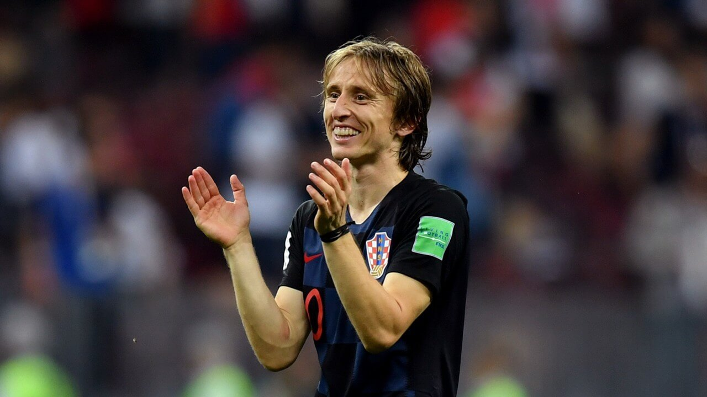

Les 3 meilleurs footballeurs du monde en 2018
Quelques jours après la fin du Mondial 2018, la FIFA propose une liste de 10 noms pour le titre de meilleur joueur FIFA The Best 2018 (pour la période comprise entre le 3 juillet 2017 et le 15 juillet 2018). Lauréat l’an passé, Cristiano Ronaldo aura de la concurrence avec des joueurs tels que Kylian Mbappé, Antoine Griezmann, Raphaël Varane ou encore Luka Modrić qui ont tous brillé en Russie. Sans oublier Lionel Messi où encore Mohamed Salah.
La liste des 10 joueurs retenus pour le trophée The Best – Joueur de la FIFA 2018 :
- Cristiano Ronaldo (Portugal/Juventus/33 ans)
- Luka Modrić (Croatie/Real Madrid/32 ans)
- Lionel Messi (Argentine/Barça/31 ans)
- Kylian Mbappé (France/PSG/19 ans)
- Raphaël Varane (France/Real Madrid/25 ans)
- Antoine Griezmann (France/Atletico Madrid/27 ans)
- Eden Hazard (Belgique/Chelsea/27 ans)
- Kevin De Bruyne (Belgique/Manchester City/27 ans)
- Harry Kane (Angleterre/Tottenham/24 ans)
- Mohamed Salah (Egypte/Liverpool/26 ans)
Et pour désigner le numéro 1 et les deux finalistes, les votes des supporters avaient la même importance
que ceux des
journalistes et des entraîneurs et capitaines des équipes nationales.
(cf. The Best FIFA
Men's Player)
Numéro 1 : Luka Modrić
Pour la première fois, le trophée du meilleur joueur masculin de la FIFA a un nouveau nom : Luka Modrić succède à Cristiano Ronaldo, vainqueur des deux premiers trophées, après une saison 2017/18 qui a vu le milieu de terrain croate atteindre de nouveaux sommets.
Il a fallu quelque chose d'exceptionnel pour briser le duopole de Ronaldo et Lionel Messi à l'apogée du football masculin, et la saison de Modrić a sans aucun doute justifié ce record. Ballon d'or adidas de la Coupe du Monde des Clubs de la FIFA, le Croate a joué un rôle essentiel dans le troisième trophée consécutif du Real Madrid en Ligue des champions de l'UEFA. Il a été le pivot métronomique du milieu de terrain des Blancos pendant toute la campagne 2017/18.
Il a également joué un rôle clé sur la scène internationale en aidant son pays à se qualifier pour la Coupe du Monde de la FIFA 2018 (Russia™) et en réalisant de superbes performances lors de la phase finale elle-même. La course infatigable de Modrić, ses buts clés et ses qualités de leader ont permis à Vatreni de se qualifier pour la finale contre la France, la meilleure performance de son pays lors de la Coupe du Monde.
Numéro 2 : Cristiano Ronaldo

Christiano Ronaldo (numéro 7), qui évolue actuellement à la Juventus, de nationalité portugaise, a été élu numéro 2.
Il a remporté la Ligue des champions de l'UEFA 2017/18 avec le Real
Madrid
Terminé 2017/18 en tant que meilleur buteur de la Ligue des champions (15)
A remporté la Coupe du Monde des Clubs de la FIFA, EAU 2017
Numéro 3 : Mohamed Salah

Mohamed Salah (numéro 10), qui joue actuellement à Liverpool, de nationalité égyptienne, a été élu numéro 3.
A aidé Liverpool à se qualifier pour la finale de la Ligue des champions de l'UEFA lors de sa première
saison
32 buts marqués lors de la campagne de Premier League anglaise, établissant un nouveau record de buts
marqués
Terminé deuxième en 2017/18 Ligue des champions de la Ligue des Champions tableau des scores